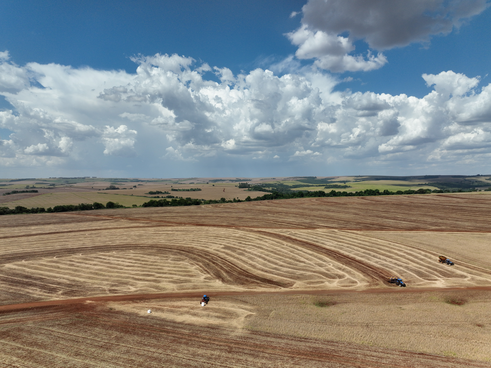

Os resíduos culturais mantidos na superfície das áreas agrícolas auxiliam na conservação do solo e da água. Por sua estimativa em campo ser onerosa, uma opção é utilizar dados e técnicas de sensoriamento remoto para detectá-los. Nesse contexto, esta pesquisa tem como objetivo estimar o percentual de cobertura do solo por resíduos culturais a partir de imagens multiespectrais de sensoriamento remoto orbital, utilizando dados do sensor MSI/Sentinel-2, regressões linear e quadrática, e o algoritmo Random Forest (RF). Espera-se encontrar no sensoriamento remoto orbital um método eficaz para estimar a cobertura do solo por resíduos culturais em larga escala, tornando a variável de fácil aplicabilidade em programas nacionais que incentivem o manejo sustentável do solo.